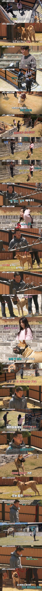
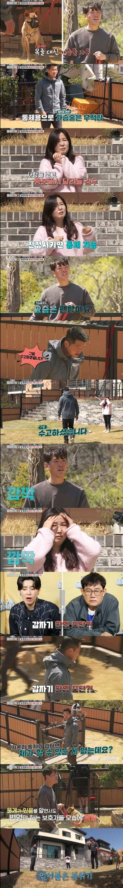

그야 당연히 주인이 문제지 ㅋㅋㅋㅋ


그야 당연히 주인이 문제지 ㅋㅋㅋㅋ
개를 좀 개처럼 키워야지 자꾸 사람마냥 아플까봐요 불편할까봐요 이러고 키우니 ㄷㄷ
여자 분도 목이 참 물리기 쉽게 두투~ㅁ 하네
위험하시겠다
맹견 기르는 건 자격증 시험 있어야 된다.
남자 테크몽?
ㅋㅋ 보면 꼭 염치도 없고 책임감도 없고 공감 능력도 없는 것들이 맹견 키움 ㅋㅋㅋㅋㅋ
책임감있는사람들은 자기가 감당 못할짓은 하고싶어도 안하니까ㅋㅋ개랑주인이랑 같이 안락사시켜야됨저런건
지능이 참 낮아
어제는 밖에 돌아다니는데 대형견 끌고다니는 아줌마
입마개 ㅈ까고 가슴줄 입에다가 한바퀴 돌려놨더라 ㅋㅋ
여자 느낌이 겁나 쎄하네.. 남자 잡혀 산다 백퍼
ㅋㅋㅋㅋㅋㅋㅋㅋㅋㅋㅋㅋ
사람 무는 개가 아플까봐 목줄이 아니라 가슴줄로 한다고? ㅆㅂ 개새끼 뒤져봐야 목줄을 할껄 하고 후회할라나?
관상
보통 개 키우는 사람들 지능이 개랑 비슷해지더라 동화되는듯
사람이 개를 키우는게 아니라 개가 주인 머리 위에 있네 저 사람은 개 키우면 안되는 사람임
정작 유럽은 개를 진짜 엄격하게 개로 다루는데,
한국만 개를 상전 모시듯 함
개새끼가 아파하고, 불편해서 안되고, 통제 잘된다면서 훈련사는 왜 부름?ㅋㅋ
무면허 동물사육 적발시 과태료나오게 해야함
세상에 나쁜 개는없다
개는 훌륭하다
= 키우는 사람이 병신이다
나도 강아지 키우는데, 저런 프로그램에서 저런 병신들 나오면 답답해 뒤지겠음ㅋㅋㅋㅋ
20년 전에 우리집에서 진돗개(부모견이 투견이었음.) 키운적이 있었는데, 나한테야 꼬리 살랑 살랑 거리지. 남한텐 어떻게 할지 아무도 예상 못하니깐 산책 갈때마다 입마개시키고, 목줄은 항상 타이트하게 잡고 다님. 누가 만져봐도 되냐고 물으면 무는 개라서 만지시다가 병원가실 수도 있다고 경고 존나 하고 댕김.
산책하고 집에 오면 오는 길에 아무 일도 없이 잘 다녀왔으니깐 기특해서 간식 챙겨줌. 그러면 지도 산책가면서 힘들텐데도 매일 산책가는 걸 기다리면서 순순히 잘 따라댕김. 13년 살다가 가긴 했는데, 그래도 키우는 내내 행복했음.
말 한마디 한마디가 다 이기적이라 좀 무섭다 저 인간들 ㅋㅋㅋ
아.. 니 애는 문제가 없는 거 맞긴 함. 니가 문제지..
얼마전 엘베에서 개 관리 안하고 자연스럽게 놔둔 주민이있었는데 개가 내 손 핥았는데 사과도 안함. 그러려니했는데 시발 내가 지 손 핥으면 가만히 있었을까? 생각해보니 열받네.
혹시 그럴땐 장난이었던걸까? 그럴땐 개가 개였던 것 뿐이었을까?
??: 칫...! 내맘도 모르고..!
난 개를 별로 안좋아한다구..
예능 이름 진짜 잘 지음
개“는” 훌륭하다
키우는 “니”들이 문제다
하 관세음보살...